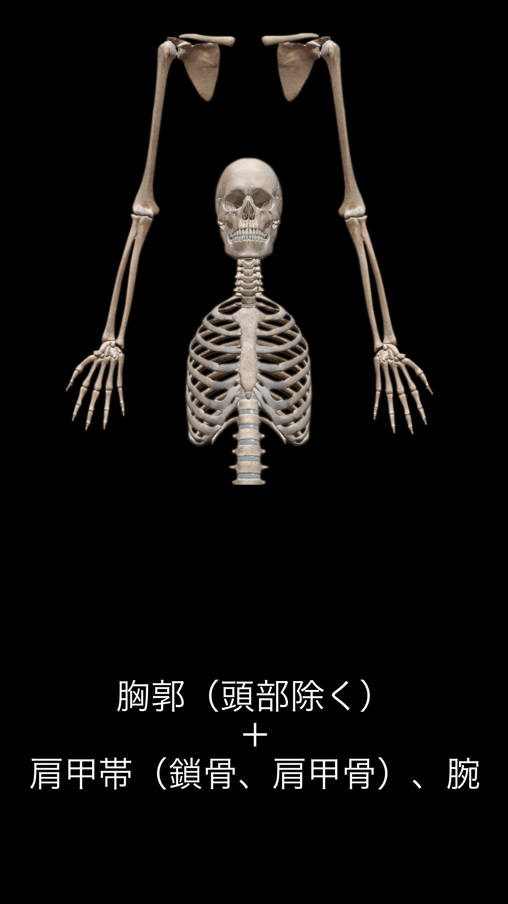
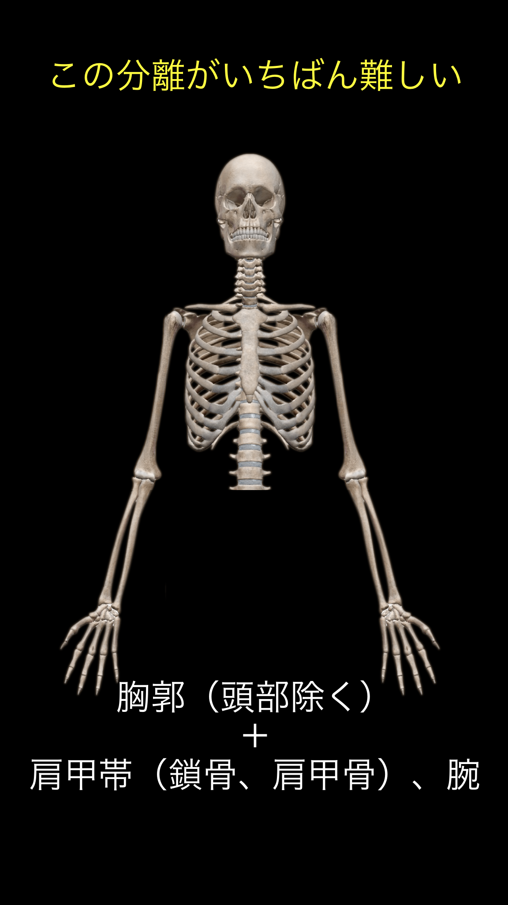
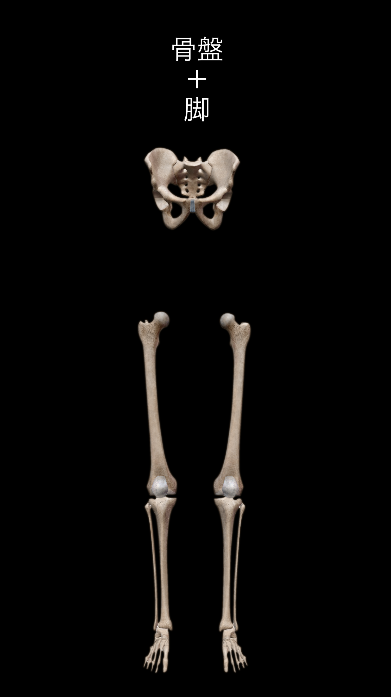
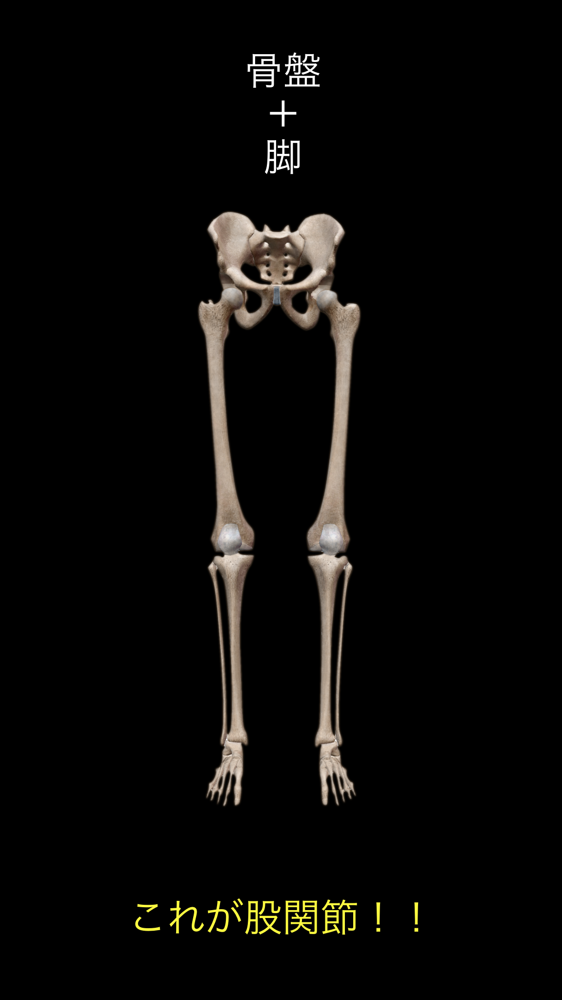

分離は「作る」ためにやってきた。
第12回は、作った分離をどう使うかを合わせる回。
野球が上手い選手は、
力が強いのではなく、
体の使い方が噛み合っている。
① 胸郭＋肩甲帯＋腕
② 骨盤＋脚
この2つがズレずに役割を果たすと、
動きは勝手につながる。
ズレると、
・手が先に出る
・肩が開く
・踏み込みが合わない


胸郭：回るパーツ
肩甲帯：腕を乗せるパーツ
胸郭が回らず、
肩甲帯だけ動くと
打撃：手が先に出る
投球：腕が先に出る
順番
胸郭 → 肩甲帯 → 腕


骨盤：向きを変える
股関節：力を受ける
骨盤が止まり、
脚だけ動くと
・踏み込みが合わない
・並進が止まる
順番
骨盤 → 股関節 → 膝 → 足
内容
MBまたはボールを胸に当てる
胸郭だけを左右に回す
回数
左右8回 ×2セット
肩で回さない。
胸で回す。
打撃：手が出る癖の修正
投球：腕先行の修正
内容
構え姿勢
骨盤だけを左右に向ける
回数
左右8回 ×2セット
胸を動かさない。
骨盤だけ動かす。
踏み込みのズレ修正
並進の土台作り
内容
① 骨盤を向ける
② 胸郭が遅れて回る
③ 前に一歩出る
回数
左右5本
下半身主導 → 上半身が乗る
出力が上がる選手の特徴は？
体の使い方を合わせるとは、
役割通りに動かすこと。
胸郭は回る。
肩甲帯は乗る。
骨盤は向きを変える。
脚は受ける。
これが合うと、
勝手に速くなる。
── 第13回「出力と方向性」へ続く ──